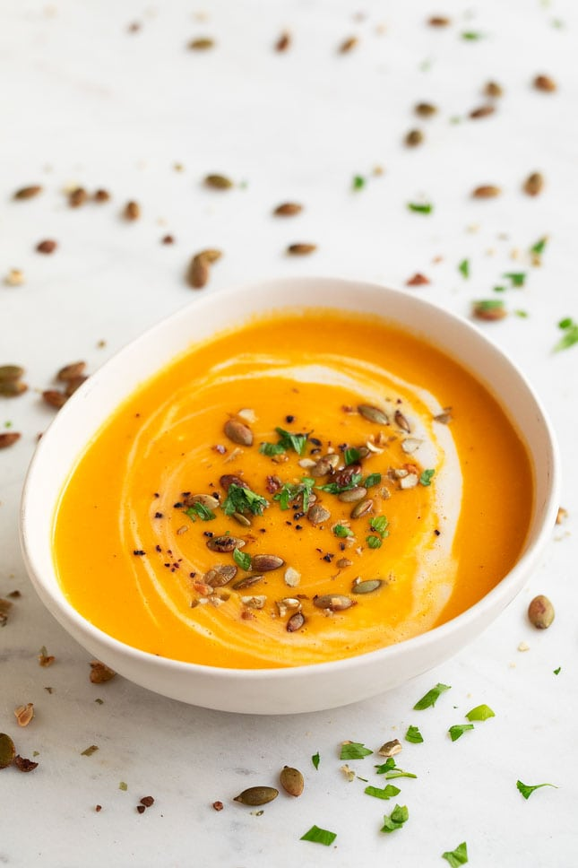

Składniki (4 porcje)
- 800 g dyni (500 g po obraniu)
- 250 g ziemniaków
- 25 g masła
- 1 cebula
- 2 ząbki czosnku
- 1 łyżeczka kurkumy w proszku
- 1 łyżeczka świeżego startego imbiru
- 1 pomidor lub 1/2 puszki krojonych pomidorów
- 1 i 1/2 szklanki bulionu
- 1 szklanka mleka
Przygotowanie
- Dynię obrać ze skórki, usunąć nasiona, miąższ pokroić w kostkę. Ziemniaki obrać i też pokroić w kostkę.
- W większym garnku na maśle zeszklić pokrojoną w kosteczkę cebulę oraz obrany i pokrojony na plasterki czosnek. Dodać dynię i ziemniaki, doprawić solą, wsypać kurkumę i dodać imbir. Smażyć co chwilę mieszając przez ok. 5 minut.
- Wlać gorący bulion, przykryć i zagotować. Zmniejszyć ogień do średniego i gotować przez ok. 10 minut.
- Świeżego pomidora sparzyć, obrać, pokroić na ćwiartki, usunąć szypułki oraz nasiona z komór. Miąższ pokroić w kosteczkę i dodać do zupy. Pomidory z puszki są już gotowe do użycia, wystarczy dodać do potrawy.
- Wymieszać i gotować przez 5 minut, do miękkości warzyw. Zmiksować w blenderze z dodatkiem mleka.